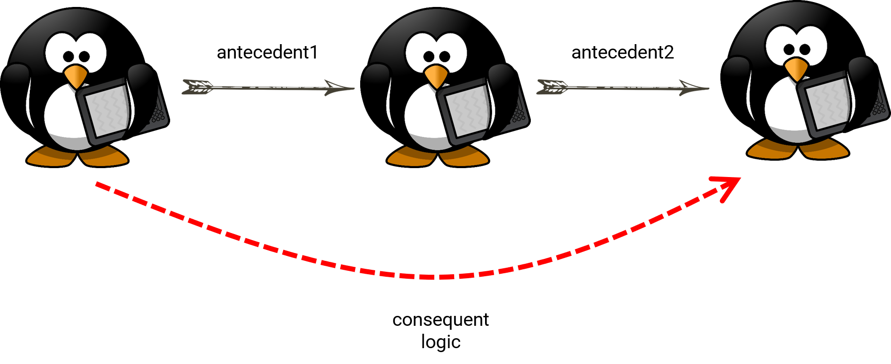

Academic Meta Tool Ontology
Authors: Florian Thiery (i3mainz, RGZM) & Martin Unold (i3mainz)
Version: Leonard Edition
Date: 2018-01-19
Abstract: An ontology and datamodel for Academic Meta Tool.
Copyright: This work is licensed under a Creative Commons Attribution 4.0 International License.
About this Document: This document is based on the GEOJSON-LD VOCABULARY by Sean Gillies (Mapbox) with a CC BY 4.0 license.
Ontology
amt:Concept
Model
amt:Concept rdfs:subClassOf rdfs:Class .
amt:Concept rdfs:label rdfs:Literal .
amt:Concept amt:placeholder rdfs:Literal .
Example
example:Person rdf:type amt:Concept .
example:Person rdfs:label "Person" .
example:Person amt:placeholder "Nachname, Vorname" .
amt:Role
Model
amt:Role rdfs:subClassOf rdf:Property .
amt:Role rdfs:label rdfs:Literal .
amt:Role rdfs:domain amt:Concept .
amt:Role rdfs:range amt:Concept .
Example
example:connectedWith rdf:type amt:Role .
example:connectedWith rdfs:label "is connected with" .
example:connectedWith rdfs:domain example:Person .
example:connectedWith rdfs:range example:Person .
amt:RoleChainAxiom

Model
amt:RoleChainAxiom rdfs:subClassOf amt:InferenceAxiom .
amt:RoleChainAxiom amt:antecedent1 amt:Role .
amt:RoleChainAxiom amt:antecedent2 amt:Role .
amt:RoleChainAxiom amt:consequent amt:Role .
amt:RoleChainAxiom amt:logic amt:Logic .
Example
example:RCA rdf:type amt:RoleChainAxiom .
example:RCA amt:antecedent1 example:connectedWith .
example:RCA amt:antecedent2 example:connectedWith .
example:RCA amt:consequent example:connectedWith .
example:RCA amt:logic amt:ProductLogic .
amt:InverseAxiom
Model
amt:InverseAxiom rdfs:subClassOf amt:InferenceAxiom .
amt:InverseAxiom amt:antecedent amt:Role .
amt:InverseAxiom amt:inverse amt:Role .
Example
example:IA rdf:type amt:InverseAxiom .
example:IA amt:antecedent example:interestOf .
example:IA amt:inverse example:interestedIn .
amt:DisjointAxiom
Model
amt:DisjointAxiom rdfs:subClassOf amt:IntegrityAxiom .
amt:DisjointAxiom amt:role1 amt:Role .
amt:DisjointAxiom amt:role2 amt:Role .
Example
example:DA rdf:type amt:DisjointAxiom .
example:DA amt:role1 example:istEinMusikinstrument .
example:DA amt:role1 example:istEinBuch .
amt:SelfDisjointAxiom
Model
amt:SelfDisjointAxiom rdfs:subClassOf amt:IntegrityAxiom .
amt:SelfDisjointAxiom amt:role amt:Role .
Example
example:SDA rdf:type amt:SelfDisjointAxiom .
example:SDA amt:role example:superInterestOf .